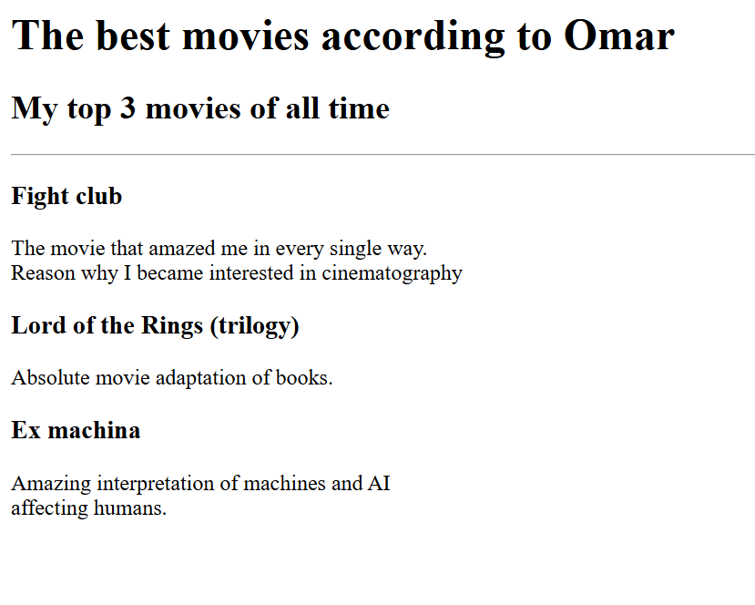

Welcome to the beginning of my web development journey. This portfolio showcases my growth from the ground up, highlighting my progress, projects, and skills as I continue to learn and evolve as a developer.
I have been building my web development skills through the guidance of Dr. Angela Yu, following her full-stack web development course. Through this learning journey, I have been developing a strong foundation in HTML, CSS, JavaScript, Node.js, React, PostgreSQL, Web3, and decentralized applications, while steadily turning theory into practical projects and real-world skills.
The projects featured here reflect my growth as a web developer and the skills I have developed along the way. Each one has helped me turn what I learn into practical experience, from building simple foundations to creating more complete and functional web applications.

Thank you for visiting my portfolio and taking the time to explore my work. This is only the beginning of my journey in web development, and I look forward to continuing to learn, improve, and share my progress along the way.